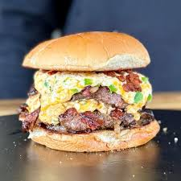

The Best Burgers!
Home

Jalapeño popper burgers combine juicy beef patties with creamy cheese,
crispy bacon, and spicy jalapeños for a bold and flavorful burger.
Ingredients
- Ground beef
- Burger buns
- Cream cheese
- Cheddar cheese
- Jalapeños
- Bacon
- Lettuce
- Butter
Steps
- Cook the bacon until crispy and set aside.
- Mix softened cream cheese with diced jalapeños and cheddar cheese.
- Form ground beef into patties and season with salt and pepper.
- Cook the burger patties on a grill or skillet until fully cooked.
- Toast the burger buns lightly with butter.
- Spread the jalapeño cheese mixture onto the buns.
- Add the burger patties, bacon, and lettuce.
- Serve hot and enjoy.